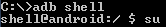

This tutorial explains the basics of setting up a OpenCL application for profiling in the Adreno Profiler.
Enabling and Disabling Profiler
It is important to know that in order to be able to profile an OpenCL application the user must have root access to the device in order to be able to set the properties needed. In a command-prompt(Start -> All Programs -> Accessories -> Command Prompt) type either:
Or
Once in root mode the following three properties are used in OpenCL profiling. For a more detailed explanation of the property and its values click on the property link.
| Property | Summary |
| ADRENO_PROFILER_ENABLE_OPENCL | Enables and disables OpenCL profiling. |
| ADRENO_PROFILER_ENABLE_BLOCKING | Handles blocking of application process until profiler is connected. |
| ADRENO_PROFILER_ENABLE_WAIT_THRESHOLD | Property to modify how long should profiler try to connect after an API it’s called. |
In order to be able to profile an OpenCL application the following property needs to be set on an adb shell with root access:
And to disable OpenCL profiling:

There’s generally two type of use cases for OpenCL applications and can be profiled with a different setup:
- For one-shot applications
These applications usually follow a simple control flow and exits quickly. This makes it hard for the user to connect to the application and profile before it exits. For this kind of applications a property can be set which blocks the execution of application until Adreno Profiler connects and starts recording. This is achieved by setting the following property:
Note: This kind of profiling is limited to command line applications ran through an adb shell and will have unexpected results if stalling the UI thread by setting this property with an APK application. If blocking until profiler is connected is needed on APK applications, some kind of instrumentation by developer will be needed, please look at the description of ADRENO_PROFILER_ENABLE_WAIT_THRESHOLD for more information on this method.
- For APK and Periodic Applications.
These applications tend to use OpenCL to compute repetitively potentially with interoperability with OpenGL. Once OpenCL profiling is enabled through ADRENO_PROFILER_ENABLE_OPENCL non-blocking profiling is enabled by default and Adreno Profiler should be able to connect to the target application and record/stop at any point in time. Please note that if no user instrumented mechanism is implemented to block the application execution the capture most likely won’t contain any creation API’s(such as kernel, etc.) and for the same reason the kernel viewer won’t be populated.
Note: OpenCL API’s profiling will fall into sleep mode after 5 seconds passed since the last OpenCL API called so if needed, the threshold can be adjusted as required through the property ADRENO_PROFILER_ENABLE_WAIT_THRESHOLD.
What to do next?
Depending on what you want to do with profiler you can look at how to: